R Shiny - Part II
NBIS, SciLifeLab
16-Apr-2025

Reactivity
- Code doesn’t always run line-by-line (Non-linear execution)
- Code executes when dependencies change

Reactive dynamics
#| '!! shinylive warning !!': |
#| shinylive does not work in self-contained HTML documents.
#| Please set `embed-resources: false` in your metadata.
#| standalone: true
#| components: [editor, viewer]
shinyApp(
ui=fluidPage(
numericInput("num_input",label="Observations",value=50),
textOutput("text_output1"), textOutput("text_output2")
),
server=function(input,output) {
rand <- reactive({ rnorm(input$num_input) })
output$text_output1 <- renderText({
mean(rand())
})
output$text_output2 <- renderText({
mean(rand())
})
})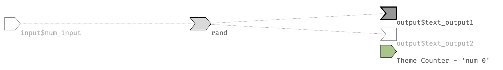
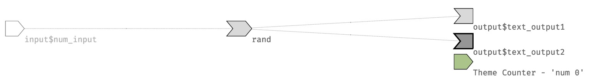
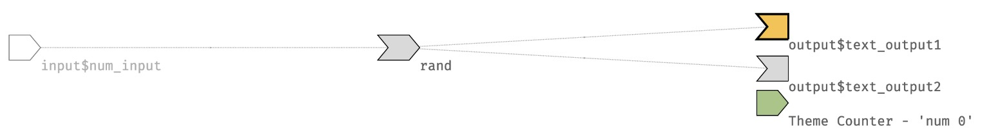
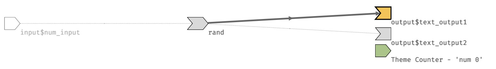
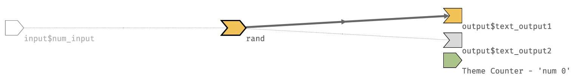
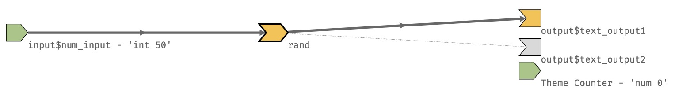
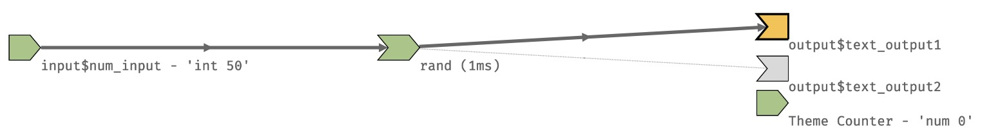

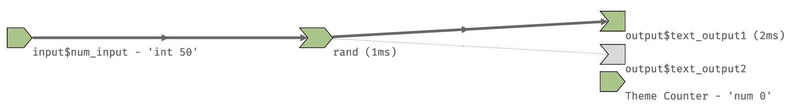
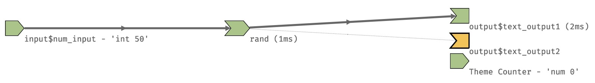
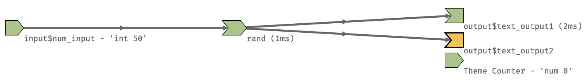
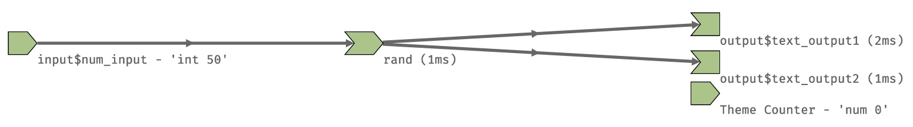
Error validation
validate()using custom function
valfn <- function(x) if(is.null(x) | is.na(x) | x=="") return("Input data is incorrect.")
shinyApp(
ui=fluidPage(
selectInput("data_input",label="Select data",
choices=c("","mtcars","faithful","iris")),
tableOutput("table_output")
),
server=function(input,output) {
getdata <- reactive({
validate(valfn(try(input$data_input)))
get(input$data_input,'package:datasets')
})
output$table_output <- renderTable({head(getdata())})
})
shiny::req()checks input variable and silently stops execution
Thank you. Questions?
Slide inspirations: Roy Francis (NBIS, RaukR2024)